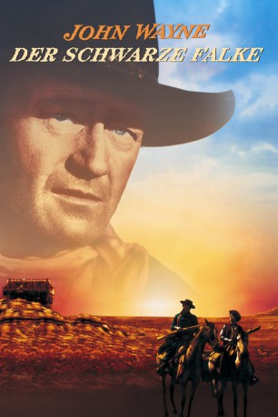

#1099 Der Schwarze Falke
Alternativ: The Searchers
Auszeichnungen: 1 GoldenGlobes gewonnen
 
 IMDB-Wertung: 8.0 / 10
IMDB-Wertung: 8.0 / 10  Metascore: 0
Metascore: 0 
Ein ehemaliger Südstaaten-Soldat, der zu der Ranch seiner Familie zurückgekehrt ist, macht sich nach einem Indianerüberfall auf die Suche nach den zwei entführten Töchtern. Bildgewaltiges Westernepos von John Ford mit John Wayne, Jeffrey Hunter, Natlie Wood und Vera Miles.
Jahr: 1956
Dauer: 119 Minuten
FSK: 12
Land: USA Studio: Warner Bros.Tonspuren: DD1.0 - ,
Untertitel: Deutsch, Englisch,
Auflösung: 1080p (1920x1080) Größe: 9256 MB
Genre: Abenteuer, Drama, Western
Regisseur: John Ford
Drehbuch: Frank S. Nugent, Alan Le May
Soundtrack: Max Steiner
Darsteller:
 John Wayne als Ethan Edwards
John Wayne als Ethan Edwards Jeffrey Hunter als Martin Pawley
Jeffrey Hunter als Martin Pawley Vera Miles als Laurie Jorgensen
Vera Miles als Laurie Jorgensen Ward Bond als Rev. Capt. Samuel Johnston Clayton
Ward Bond als Rev. Capt. Samuel Johnston Clayton Natalie Wood als Debbie Edwards - Age 15
Natalie Wood als Debbie Edwards - Age 15 John Qualen als Lars Jorgensen
John Qualen als Lars Jorgensen Henry Brandon als Scar
Henry Brandon als Scar Ken Curtis als Charlie McCorry
Ken Curtis als Charlie McCorry Harry Carey Jr. als Brad Jorgensen
Harry Carey Jr. als Brad Jorgensen- Antonio Moreno als Emilio Gabriel Fernandez y Figueroa
 Hank Worden als Mose Harper
Hank Worden als Mose Harper- Dorothy Jordan als Martha Edwards
- Pippa Scott als Lucy Edwards
 Patrick Wayne als Lt. Greenhill
Patrick Wayne als Lt. Greenhill- Lana Wood als Younger Debbie Edwards
 Ruth Clifford als Deranged Woman at Fort , uncredited
Ruth Clifford als Deranged Woman at Fort , uncredited Mae Marsh als Dark Cloaked Woman at Fort Guarding Deranged Woman , uncredited
Mae Marsh als Dark Cloaked Woman at Fort Guarding Deranged Woman , uncredited- Chief Thundercloud als Comanche Chief , uncredited
- Olive Carey als Mrs. Jorgensen
- Beulah Archuletta als Look
 Walter Coy als Aaron Edwards
Walter Coy als Aaron Edwards- Pipe Line Begishe als Comanche Indian , uncredited
- Exactly Sonnie Betsuie als Comanche Indian , uncredited
- Danny Borzage als Accordionist at Funeral , uncredited
- Carmen D'Antonio als Carmen , uncredited
- Tommy Doss als Wedding Musician , uncredited
- Pete Grey Eyes als Comanche Indian , uncredited
- Feather Hat Jr. als Comanche Indian , uncredited
 Nacho Galindo als Mexican Bartender , uncredited
Nacho Galindo als Mexican Bartender , uncredited Chuck Hayward als Man at Wedding , uncredited
Chuck Hayward als Man at Wedding , uncredited- Jack Tin Horn als Comanche Indian , uncredited
- Harry Black Horse als Comanche Indian , uncredited
- Away Luna als Comanche Indian , uncredited
- Robert Lyden als Ben Edwards , uncredited
 Cliff Lyons als Col. Greenhill , uncredited
Cliff Lyons als Col. Greenhill , uncredited- Peter Mamakos als Jerem Futterman , uncredited
 Frank McGrath als Texas Ranger , uncredited
Frank McGrath als Texas Ranger , uncredited- Bob Many Mules als Comanche Indian , uncredited
- Jack Pennick als Sergeant at Fort , uncredited
- Lloyd Perryman als Wedding Musician , uncredited
 Chuck Roberson als Texas Ranger at Wedding , uncredited
Chuck Roberson als Texas Ranger at Wedding , uncredited- Smile White Sheep als Comanche Indian , uncredited
- Many Mules Son als Comanche Indian , uncredited
- Percy Shooting Star als Comanche Indian , uncredited
- William Steele als Nesby , uncredited
 Terry Wilson als Texas Ranger , uncredited
Terry Wilson als Texas Ranger , uncredited- Billy Yellow als Comanche Indian , uncredited
Datei: X:\HD-Western-Collections\John Wayne\Schwarze Falke, Der (1956, FSK12, 1920x1080).mkv seit 20.05.2015
Festplatte: HD Eastern+Western
 Es gibt insgesamt 34 Filme in der Gruppe 'HD-Western-Collections\John Wayne'
Es gibt insgesamt 34 Filme in der Gruppe 'HD-Western-Collections\John Wayne'